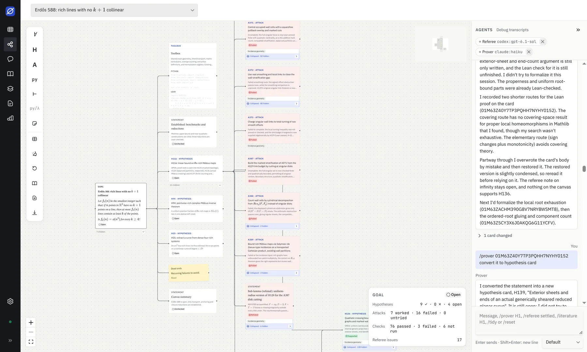

A research canvas where AI agents work with you
Write a goal. A Prover agent splits it into hypotheses and proves or refutes them, a Referee checks the proofs, and Python and Lean cards run real checks. Everything lands on one canvas, on your machine.
Linux, macOS and Windows. Needs the free Claude Code CLI for the agents.

How it works
A project is a problem. The canvas is where the work shows up, one card at a time.
- Write the goal State what should be proved or refuted. Markdown and LaTeX work everywhere.
- Prover splits it The agent proposes hypotheses and works on each, adding proofs and counterexamples.
- Checks run Python and Lean cards execute locally, and their output stays on the card.
- Referee reviews A second agent reads the proofs and flags gaps before a hypothesis counts as settled.
Built for real research work
Small, local and inspectable. You can read every card an agent wrote.
Typed canvas
Goal, hypothesis, statement, note, Python and Lean cards linked by edges such as depends on, tested by and refuted by.
Two agent roles
Add a Prover or a Referee per canvas, pick the model, and send
/prover goal or /referee H1.
Research memory
Agents record dead ends and facts per project and read them at the start of every run, so they do not repeat failed approaches.
Progress at a glance
Hypothesis and goal statuses, passed checks and referee issues, counted for you.
Local and private
The daemon listens on 127.0.0.1 only and every request needs a per-launch token. Your data is a folder with a SQLite file.
Token budgets
Each agent has a token cap, and a run stops when it passes it.
Install
Use the desktop app, or run it from source in your browser.
Desktop app
Download the installer for your system from the
latest release. It starts its own daemon and stores projects in
~/Lemmata.
The first launch walks you through a short tour and checks that Claude Code, Python and Lean are found.
From source
Needs Node 22 or newer.
git clone https://github.com/stepanvanzuriak/lemmata
cd lemmata
yarn install
yarn devThen open http://localhost:5173.
Questions
Does it send my work anywhere?
Lemmata has no server and no telemetry. Agent runs go through the Claude Code CLI on your machine, so the usual Claude Code terms and data handling apply to what the agents read and write.
Do I need to pay for anything?
Lemmata is free and MIT licensed. Agent runs use your own Claude Code account, so its usage limits and costs apply.
Can I use another AI agent?
Claude Code and Codex are supported, and you can pick a different one for the Prover and the Referee. The runner is agent-agnostic by design, and more adapters are planned.
Is it ready for serious use?
It is an early release. The canvas, checks, agents and memory work today; plots, animations, exports and more toolkits are still to come. Expect rough edges and please report them.